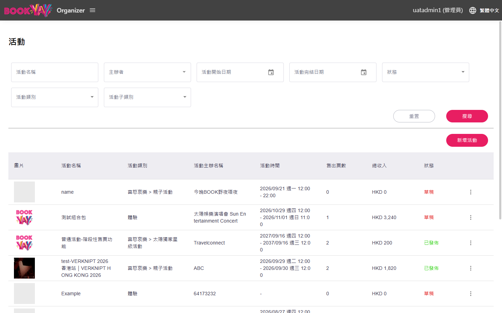
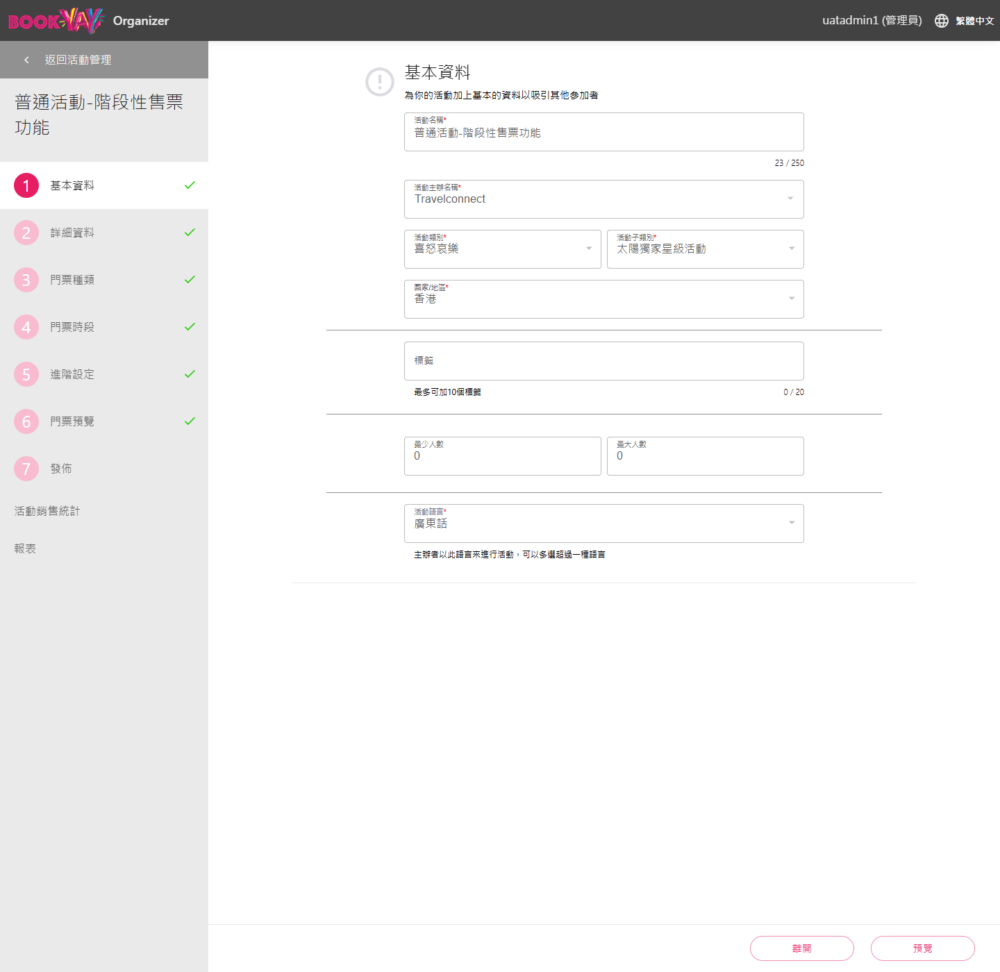
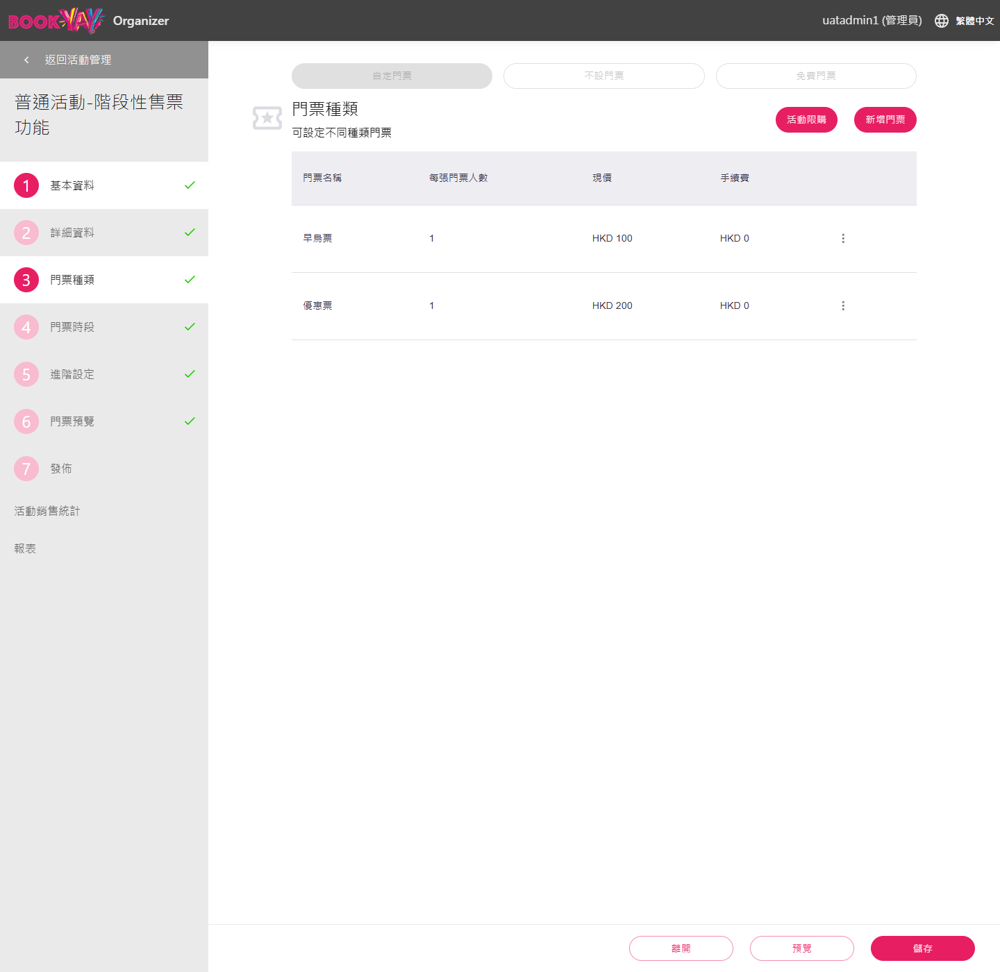
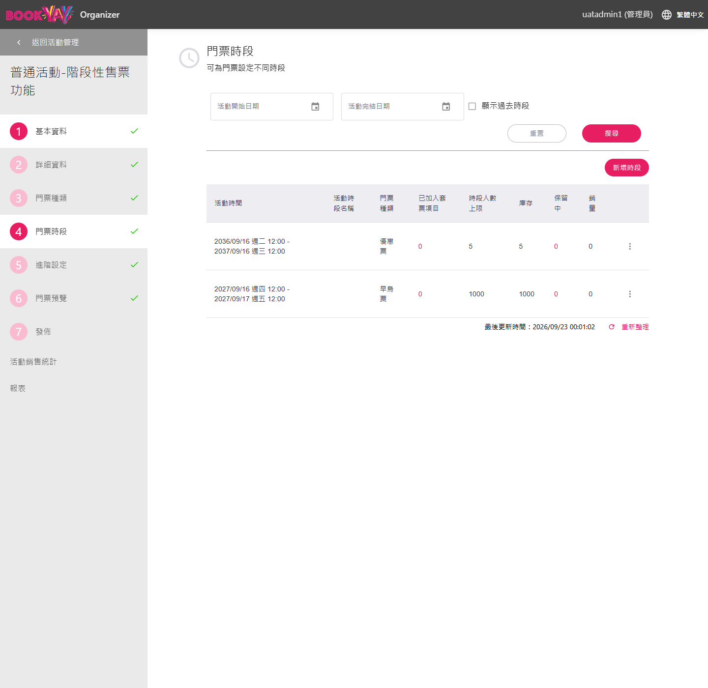
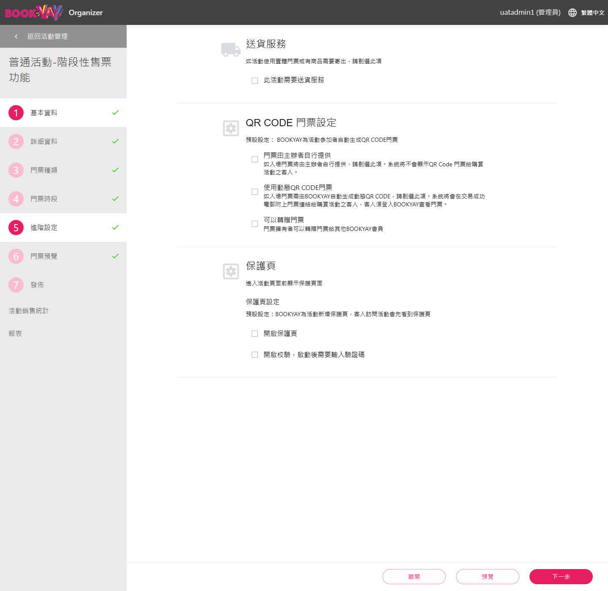
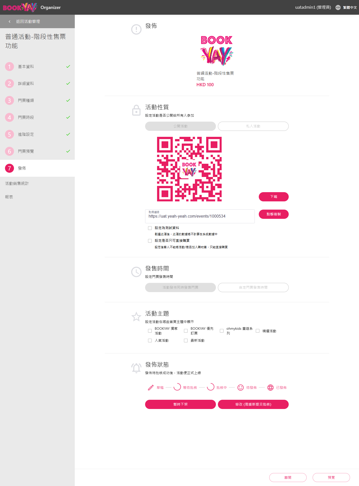
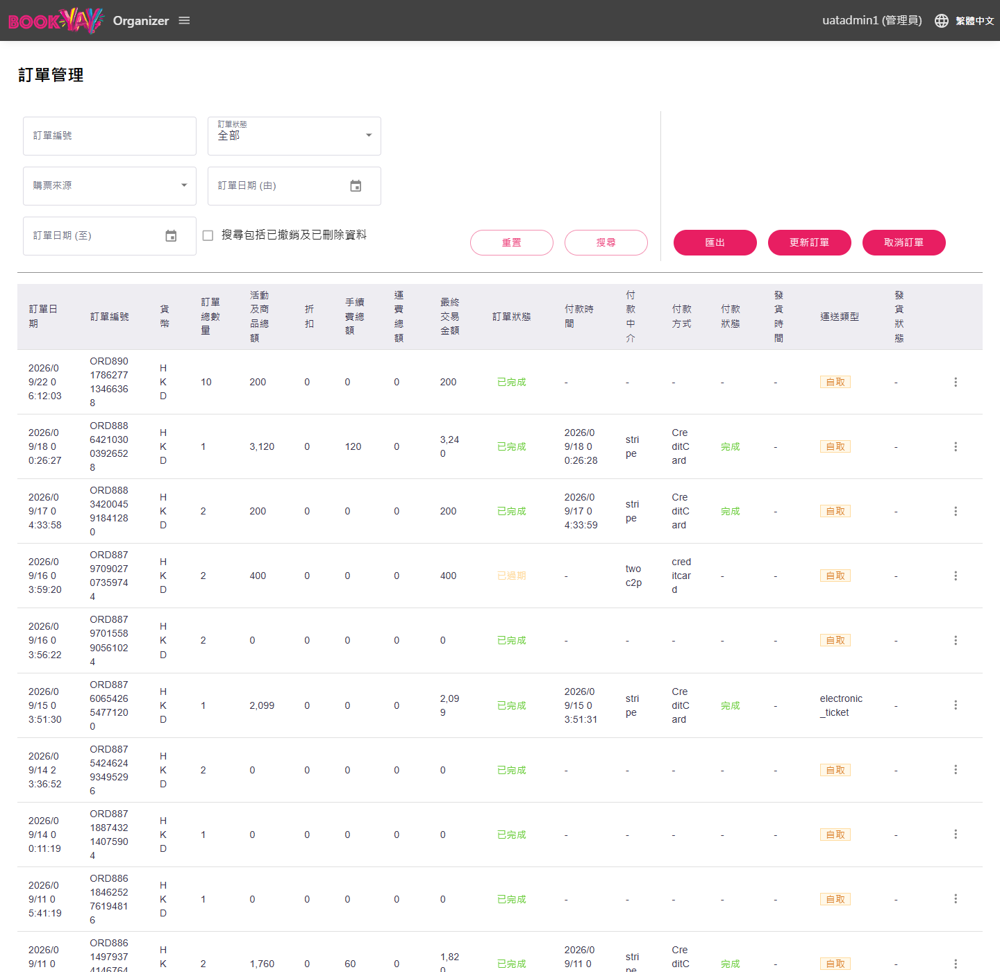
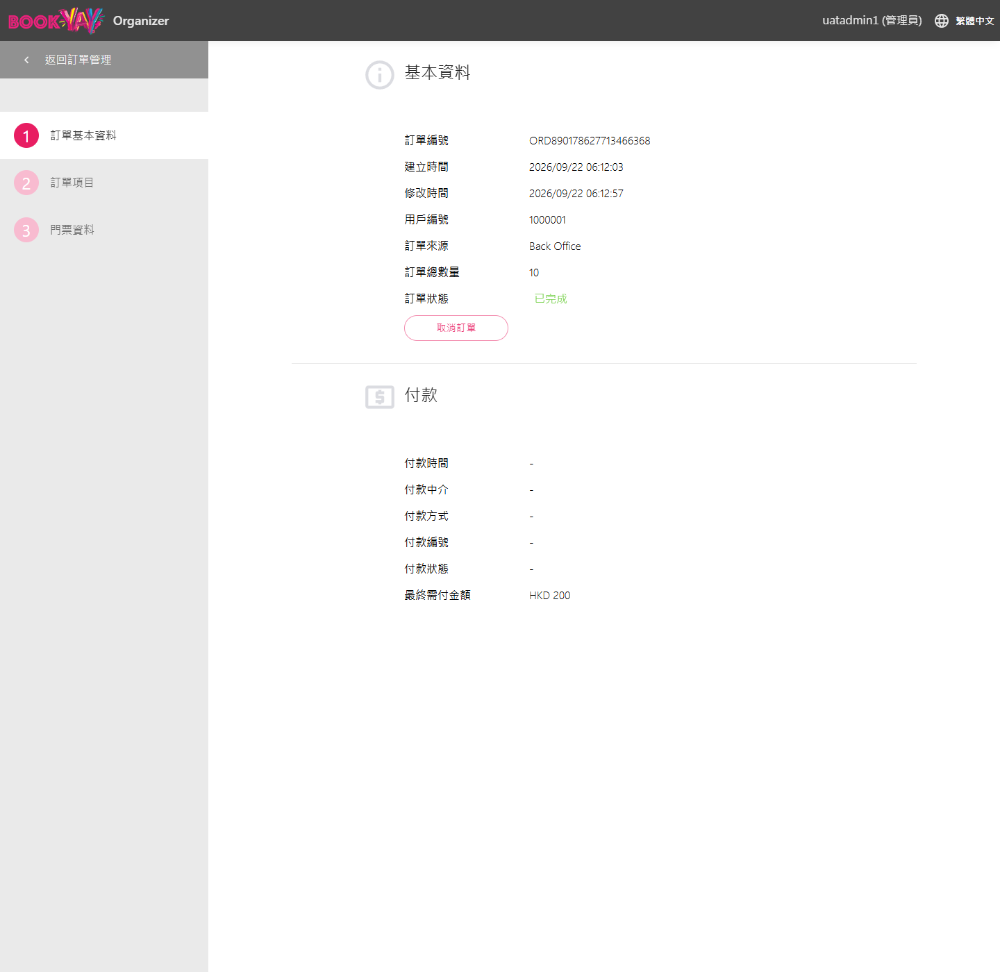
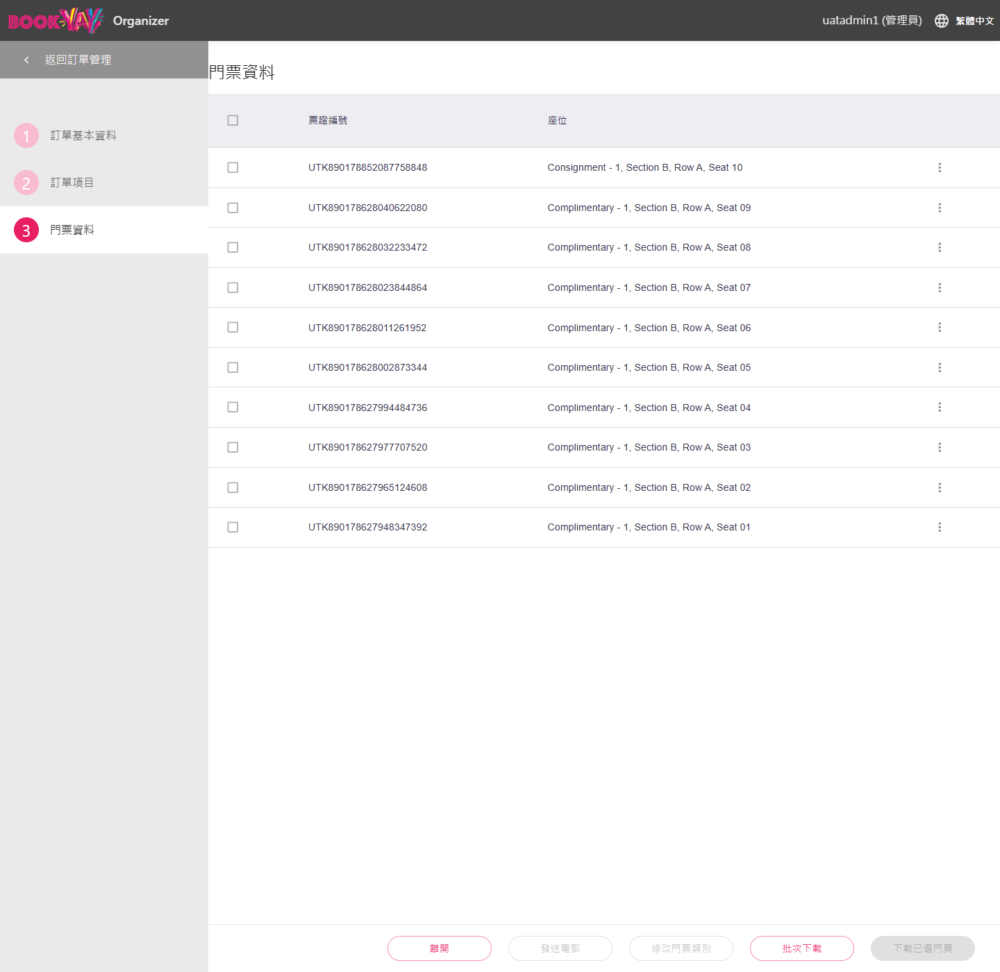
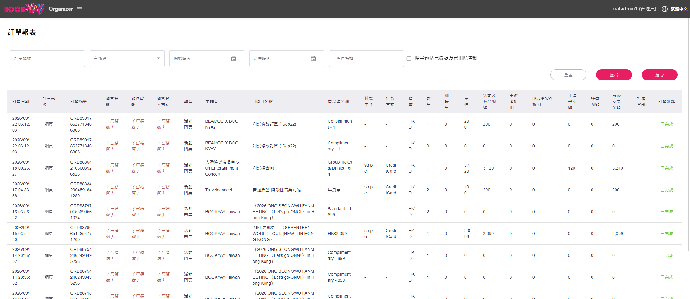

Bookyay BO — 要改什麼、要建什麼
Ztor × Bookyay 寄售整合 · 直接標在現有 UAT 後台畫面上（2026-09-22 擷取，唯讀）· 點圓點看說明 · 契約：BRD v1.3 · 開發票：bookyay-side-dev-spec-2026-09-22.md（BO-1…11 · API-0…7）· Phase 1 活動型態＝一般活動（活動管理）
新 UI — 畫面上看得到的新東西
背景 — 系統自動做，沒有畫面
不變 — 沿用現有欄位／動作
0
全流程 · Bookyay 批發，Ztor 零售
需求：Bookyay 一般活動勾「Ztor 活動」後，整場票預開 QR 交給 Ztor 販售；銷售、作廢、收回回到 Bookyay 記帳與掃票。Bookyay 端沒有新的營運流程 — 建活動、發佈、取消訂單都是既有動作。（BRD §1 · BR-02 · BR-40 · BR-60）
① 建一般活動門票種類 · 門票時段 · HKD不變
→
② 勾 Ztor 活動基本資料一個開關新 UI
→
③ 核准 → 自動預開上限 N = N 張 QR 交給 Ztor背景
→
④ Ztor 匯入販售API 拉活動／票／庫存Ztor
→
⑤ 回寫訂單 pool→sold新
→
⑥ 作廢／收回取消訂單 · 改上限沿用
Bookyay 端不用建：活動精靈 · 門票種類／時段 · 私人活動＋私人連結 · 活動限購 · 每藝人主辦者 · 入場統計 · 取消訂單 · 修改門票類別
要建：Ztor 活動開關 · 發佈後自動預開 · 購票來源 Ztor＋通路狀態 · 回寫接收 · webhook 推送 · 報表通路篩選 · Channel API
1
建立活動 · 現有精靈 ＋ 一個開關
需求：營運要能標記「這場在 Ztor 賣」，並在發佈核准當下把整場票預開交給 Ztor。Phase 1 是 take-all、只在 Ztor 賣 — 一個開關就夠，不需要預留門票／選座／分配數量。（BR-01 · BR-02 · BR-20 · BR-22 · BR-25）
以下都是現在 UAT 後台的真實畫面 — 綠點是新東西，藍點是背景工作，灰點是沿用。
畫面
活動管理 › 活動列表

- 1新增「通路」篩選 — 全部／Bookyay／Ztor，營運一眼看出哪些活動在 Ztor 賣
BO-2
- 2新增「通路」「預開」欄位 — 顯示 Ztor 與已預開張數
BO-2/4
- 3預開狀態 — 已預開 1,005 / 預開中 / 失敗（可重試）
BO-4
1 基本資料 — 唯一的新欄位

- 1Ztor 活動 於 Ztor 販售（整場）
開啟後：進 Ztor feed · 發佈核准自動預開 · bookyay.com 不販售此活動 · 只在一般活動出現 BO-2
- 2其餘欄位全部不變 — 名稱／主辦／類別／地區／語言照原樣填，經 feed 帶到 Ztor（Ztor 端唯讀）
BR-10
關閉開關＝撤銷分配：僅在尚無 Ztor 售出時允許（走 §3 收回流程）；已有售出則提示改走整場取消
3 門票種類 — 完全不變

- 1現價 HKD ＝ 基準價 — Ztor 依平台匯率表換算 USD/SGD/TWD，CS 逐幣微調整數
BR-25
- 2活動限購 — 每人總限購／每次交易限購／限購次數在這裡設，Ztor 拉取後於結帳執行
BR-22
- 3票種＝Ztor 的販售選項 — 早鳥／優惠等逐筆帶到 Ztor 活動頁
API-2
4 門票時段 — 數量的來源

- 1時段人數上限＝給 Ztor 的整場數量 — 不需另外填分配數；take-all
BR-02
- 2背景：核准後系統依此上限預開等量門票（1,000 + 5 = 1,005 張 QR）
BO-4
- 3逐時段票種 — 階段性售票＝一個時段一個票種；同時段票種共用上限
API-2
5 進階設定 — 維持預設值

- 1背景：這些開關經 API 傳給 Ztor（
flags）— 設定不符的活動 Ztor 會拒絕匯入並提示，避免票到現場掃不過 API-2
- 2門票由主辦者自行提供 = 不勾 — QR 必須由 BOOKYAY 產生（掃票契約）
BR-02/03
- 3動態 QR = 不勾 — Phase 1 靜態 QR（09-09 定案）
- 4轉贈門票 = 不勾 — 轉贈在 Ztor 端不支援，留待 Phase 2
7 發佈 — 觸發預開

- 1私人活動 — 只在 Ztor 賣的活動用這個：bookyay.com 隱藏，Ztor 隱藏上架＋私人連結
BR-20
- 2設定為測試資料 = 不勾 — 測試資料的活動不進 Ztor feed
API-1
- 3預開摘要 — 「核准後將預開 1,005 張並交付 Ztor」
BO-4
- 4背景：狀態進入 已發佈 當下啟動預開 → 完成後推
allocation.changed ＋ event.published，活動才出現在 Ztor BO-4 · API-6
一個開關取代：預留門票 · 選座 · 分配數量 · 移交 BO-2
Q6′ — 背景一次產生 1,000+ 張票可行？預開先掛預設票種、售出後以 修改門票類別 改為實際票種，可程式化呼叫嗎？
2
編輯活動 · 改動如何傳到 Ztor
需求：活動改期／改地點／暫停／加減票數時，Ztor 必須即時跟上，且絕不能把已經賣掉的票收回。改動沿用現有的「修改 → 重新批核」流程，Ztor 端靠 webhook 同步。（BR-42 · BR-43 · BR-50 · BR-51 · BR-52 · BR-04）
情境
7 發佈 › 發佈狀態
- 1修改（需重新提交批核） — 照現行流程。送審期間 Ztor 繼續賣已核准版本；新版核准才推
event.updated，Ztor 更新欄位、營運人工 email 通知買家 BR-42
- 2暫停發售 / 暫時下架 — 這才是「停賣」訊號 →
event.paused → Ztor 自動下架；恢復則 event.resumed BR-04
- 3整場取消 →
event.cancelled：已售票全部作廢、未售票全部收回，Ztor 下架並通知買家，退款由營運在金流後台執行 BR-43
4 門票時段 › 修改上限
- 1上限調高（1,000 → 1,200）核准後：系統自動預開差額 200 張 →
allocation.changed，Ztor 可售量即時增加 BR-50
- 2上限調低＝提出收回（不是直接取消）→ 時段列顯示 收回中 100
BO-8
收回為什麼要三步：Bookyay 這邊的「未售」數字落後一個同步週期。直接取消會把 Ztor 剛賣掉的票標成收回 → 買家到場被拒。
① Bookyay 提出（要收回 100）→ ② Ztor 挑出真正未售的票立即回寫（不足就回少）→ ③ Bookyay 確認取消那些訂單、庫存歸還。24 小時無回應＝逾時，什麼都不動。已收回 100 部分 96/100 逾時
已售出的票永遠不會被收回 BR-51
審核中的修訂不影響 Ztor 販售 — 以已核准版本為準
售票時窗結束時自動收回未售票（BR-52）在只賣 Ztor 的活動還需要嗎？
3
訂單管理 · 作廢（退款）
需求：Ztor 的銷售要出現在既有訂單與報表（ztor_tag 分渠道）；買家要退款時，作廢在 Bookyay BO 執行並即時通知 Ztor 更新錢包與發信。系統不碰錢 — 退款由營運在金流後台執行。（BR-40 · BR-41 · BR-60 · BR-61）
畫面
訂單管理

- 1購票來源加一個值：Ztor — 現有是 Bookyay／BO。這就是
ztor_tag，財務用它分渠道 BO-5
- 2新增「通路狀態」「通路參考」欄 — pool 未售 / sold 已售 / voided 已作廢 / returned 已收回；通路參考＝Ztor 訂單號
BO-5/6
- 3取消訂單 = 作廢 — 沿用現有按鈕與「撤銷」狀態，不另建作廢功能
BR-40
- 4預設隱藏 pool 列 — 否則一場活動 1,000 筆未售訂單會淹沒真實訂單（篩選才顯示）
BO-5
訂單詳情 › 訂單基本資料

- 1訂單來源顯示 Ztor — 順便修正現況：同一筆訂單在列表顯示
BO、詳情顯示 Back Office、報表顯示 網頁 BO-5
- 2取消訂單 → 狀態「撤銷」→ 推
ticket.voided 給 Ztor → 買家錢包變「已取消」＋ 自動 email BR-40
- 3兩道防呆：① 已入場的票不可作廢（顯示掃描時間）② 通路狀態仍是 pool 的訂單不可從這裡取消 — 提示先在 Ztor CS 手動同步
BO-7
作廢 SOP：① Ztor CS 手動回寫 → ② 訂單管理以通路參考搜尋 → ③ 取消訂單。錢不動 — 營運在 Ztor 金流後台退款
訂單詳情 › 門票資料（＝交給 Ztor 的東西）

- 1票證編號（UTK）＝ 掃描單位 — 預開時產生，QR 內容由 Bookyay 決定，Organizer App 照掃不誤
BR-03/30
- 2背景：Ztor 活動在發佈當下這裡就有 N 筆，一票一筆通路訂單（Model C）
BO-4
- 3修改門票類別（既有功能） — 預開時先掛該時段預設票種，售出回寫時由系統改成實際售出票種；QR 不變
BO-6
回寫是冪等的：同一批次重送不會重複計算 API-5
回寫內容不含買家姓名／email／電話 BR-61
Q7 — 你們正在開發的「修改門票類別」與這裡的訂單頁改動是否同一塊？
4
報表 · 分渠道
需求：MVP 日常報表的家就是 Bookyay BO — 財務要能把 Bookyay 自售與 Ztor 渠道分開看，而且預開但未售的票不能被算成銷售。（BR-60 · BR-62 · A5 同集團不結算）
報表 › 訂單報表（買家欄位已於截圖隱藏）

- 1新增「通路」篩選 — 全部／Bookyay／BO／Ztor，各張銷售報表都加（活動售票／分成／月結）＋匯出含新欄位
BO-10
- 2訂單來源欄＝渠道 — Ztor 銷售在既有報表就看得到，不需要另建一張報表
BR-62
- 3認列規則：pool 不算銷售（顯示為「通路持有」）· sold 才計入金額；收入以 付款時間 記日，不是訂單建立日
BO-10
- 4顧客欄永遠是 Ztor 佔位 — 通路訂單不帶買家個資；需要買家細節時由 Ztor 端查
BR-61
入場統計不需修改（讀門票狀態）；只需把入場率分母改為「已售」張數，否則預開未售的票會稀釋比率
Q10 — 財務：通路訂單不產生手續費行、收入以付款時間記日，可接受？
5
API · Webhook · 通路設定（沒有畫面的部分）
需求：Ztor 要能自動匯入活動與票種、拿到每張預開票的 QR 與入場狀態、下單前確認庫存、把銷售回寫給 Bookyay；Bookyay 要能即時把上下架／取消／作廢／庫存變動推給 Ztor。全部金鑰認證、不含買家個資。（BR-04 · BR-21 · BR-30 · BR-60/61/63 · BR-64）
View
| # | 介面 | 給 Ztor 什麼 | BRD |
|---|
| API-0 | 金鑰認證 Bearer | 去識別（無買家欄位）· 分頁 · 金額以「分」為單位 · updatedSince 增量 | §8 |
| API-1 | GET /events | 只回「Ztor 活動＝ON」且預開完成的一般活動 · 三語標題／內文 · 私人旗標 · 購買上限 · 時區 · 上下架狀態 | BR-04/10/20/22 |
| API-2 | GET /events/{id} | ＋ 時段（上限＝分配量、售票時窗）· 票種（HKD 價、逐票種時窗、上限）· 條款 · 進階設定 flags | BR-12/14/25 |
| API-3 | GET /events/{id}/tickets | 每張預開票：QR 內容 · 票種 · 通路狀態 · 是否已入場／入場時間 | BR-02/30/64 |
| API-4 | GET …/availability | 下單前確認：逐票種未售數 · 是否在售 · 上下架狀態（純查詢，無副作用） | BR-21 |
| API-5 | POST /syncback | Ztor → Bookyay：交易明細（含售出票種）· 票券狀態 · 庫存對帳；冪等可重放，含買家個資的欄位直接拒收 | BR-60/61/63 |
假 API 先行：規格與 mock 先出，Creator Studio 團隊不必等 Bookyay 端完成就能開工（09-21 與 Eric 的共識）API-7
| 事件 | 何時推 | Ztor 收到後 |
|---|
event.published | 發佈核准＋預開完成 | 活動可售 |
event.paused / resumed | 暫停發售 · 暫時下架 · 改回草稿 | 自動下架 / 重新上架 |
event.updated | 修訂核准生效時（非送審時） | 更新鎖定欄位；營運人工 email 買家 |
event.cancelled | 整場取消 | 下架 · 全部票已取消 · 營運退款 |
ticket.voided | 取消訂單（已售的通路訂單） | 錢包「已取消」＋自動 email |
allocation.return_requested | 上限調低核准 · 關閉 Ztor 開關 | 挑出未售票立即回寫 |
allocation.changed | 預開／加票／收回確認／撤銷 | 可售量增減；歸零＝完售（不下架） |
ticket.redeemed 選配 | Organizer App 掃描 | 錢包「已使用」（否則每小時拉一次） |
送達保證：簽章驗證 · 失敗自動重試（1分→24小時）· 後台可查紀錄並重送 · 每則帶完整現況，順序顛倒也不會出錯 BO-9
必要的資料（一筆）：通路代碼 ztor · API 金鑰 · webhook 網址與密鑰 · 佔位顧客 · 狀態
必要的畫面：一頁唯讀紀錄 — webhook 推送紀錄（可重送）＋ 回寫批次結果。出問題時營運看這裡
可選的畫面：完整的「通路夥伴」管理頁（新增／編輯／停用／自助輪替金鑰）。目前只有一個通路、也不預期增加 — 是否要做交由 biz 與 dev 決定，不影響其他功能
Q1 — Organizer App 驗的 QR 是什麼字串？（唯一擋住 API-3 定稿的問題）
Q3 — 先前 Damai 寄售有沒有做過 partner API／匯出可重用？
Q9 — 現有的 queue／排程機制可重用於 webhook 推送嗎？
6
每場活動的設定清單（營運做 · 不需開發）
需求：Ztor 端鎖定的欄位 — 票價、購買上限、條款、上架方式 — 全部沿用 Bookyay 既有設定，經 feed 帶到 Ztor（「新增不改」）。這是每場的檢查表。（BR-14 · BR-20 · BR-22 · BR-25 · BO-11）
Checklist
| 步驟 | 設定 | 為什麼 |
|---|
| 1 基本資料 | 一般活動（非票務活動、非優先訂票）· Ztor 活動 = ON | Phase 1 只支援一般活動；開關＝進 feed（BR-01/02） |
| 2 詳細資料 | 條款及細則 填該場條款並開啟顯示 | Ztor 沿用 Bookyay 條款，不另建（BR-14） |
| 3 門票種類 | 自定門票 · 名稱 · 現價 HKD · 每張門票人數 | HKD 為基準價，Ztor 依匯率表換算、逐幣微調（BR-25） |
| 3 門票種類 | 活動限購：每人總限購 · 每次交易限購 · 限購次數 | 購買上限在 Bookyay 設定，Ztor 拉取後於結帳執行（BR-22） |
| 4 門票時段 | 單一時段（MVP）· 時段人數上限 = 給 Ztor 的整場數量 · 售票時窗 | 上限＝預開張數；階段性售票＝逐時段一個票種（BR-02） |
| 7 發佈 | 私人活動（只在 Ztor 賣時）· 不勾「設定為測試資料」 | 隱藏上架＋私人連結（BR-20）· 測試資料不進 feed |
不用做：預留門票 · 選座 · 分配數量 · 移交 — 發佈核准後系統自動預開
QR CODE 門票設定：BOOKYAY 自動生成 QR（預設）· 門票由主辦者自行提供 不勾 · 使用動態 QR 不勾 · 可以轉贈門票 不勾
實名登記 不勾 · 開啟優惠碼校驗 不勾（折扣由 Ztor 端處理）· 保護頁 不勾 · 送貨服務 不勾（電子門票）
這些開關經 API 傳給 Ztor — 設定不符的活動 Ztor 會拒絕匯入並提示，避免票到現場掃不過
Price · caps · T&C · listing mode all stay Bookyay-owned BR-25/22/14/20
Ztor adds only a display layer: images · supplementary text · translations BR-10
Q8 — IsTest 活動一律排除，確認？
7
現場掃票 · 完全不變（BR-03 · BR-31 · BR-64）
需求：Ztor 賣出的票必須能用現有的 Bookyay Organizer App 原樣掃描 — 不改 App、不換掃描器、不發新裝置。Bookyay 需要為每位藝人開一個 organizer 帳號（09-16 定案），入場數據回到既有報表。
Topic
主辦者管理 / 成員管理（既有功能）
營運待辦：每位藝人一個 主辦者 帳號 + 綁該主辦者的 成員 帳號（掃票用）— 由 Bookyay 開立
09-16 定案 藝人 A 的帳號看不到也掃不了藝人 B 的活動
Organizer App：版本不變、流程不變 — 掃 Ztor 賣出的票與掃 Bookyay 自己賣的票完全相同（都是 UTK）
已作廢／已收回的票在 App 端會被拒絕
QR 內容 = Bookyay 產生（預開時一次交付給 Ztor，靜態，不變）
票面樣式 = Ztor 預設版型：Ztor 自己渲染活動資訊 + QR，買家可下載 PDF／圖片（BR-30）· Phase 1 不做票面編輯器
Bookyay 端與 David 談的票面改版是另一條線，不擋這個整合
唯一待確認（Q1）：Organizer App 驗的那串 QR 內容是什麼格式？回覆前 API-3 無法定稿
報表 › 票務活動入場統計（既有）
逐活動／逐時段 已入場 · 未入場 · 匯出 — 照舊使用，不需改
同一份資料經 API-3 回給 Ztor → Creator Studio 顯示唯讀的 已入場／未入場 名單（BR-64）
活動當天建議手動同步一次，讓入場率分母（已售張數）即時正確
Pre-issued QR scans on the unchanged app BR-03 A4
One organizer account per artist — ops task, no build BR-31
Q1 — QR payload 格式
8
範圍界線 · 待你們確認 · 開工順序
需求：讓今天散會時三件事是清楚的 — Phase 1 不做什麼、Bookyay 要回覆什麼、假期前哪些可以先動工。（BRD §3 Out · §11 里程碑）
View
| # | 問題 | 擋住什麼 | 誰 |
|---|
| Q1 | Organizer App 驗的 QR 是什麼字串？格式、是否整張票生命週期不變 | API-3 預開票交付 | Jesse / Eric |
| Q2 | 活動 stage 代碼表（500 = 已發佈？）與 valid 意義 | webhook 狀態對應 | Jesse |
| Q3 | 先前 Damai 寄售有沒有做過 partner API / 匯出可重用? | 可能省一整塊 | Jesse |
| Q6′ | 背景一次產生 1,000+ 張票可行？預開先掛預設票種、售出後以修改門票類別改為實際票種 — 可程式化呼叫嗎？ | BO-4 預開作法 | Eric |
| Q7 | 你們正在開發的 修改門票類別 / Event 相關功能，與這裡的訂單頁改動是否同一塊？ | 排程衝突 | Jesse / Eric |
| Q10 | 財務：通路訂單不產生手續費行、收入以付款時間記日 — 可接受？ | 分成 / 月結報表 | Agnes |
| 新 | 售票時窗結束時自動收回未售票（BR-52）在只賣 Ztor 的活動還需要嗎？ | BO-8 是否要做 | Biz |
Jeff 待決：回寫頻率 每小時 取代每日（不加開發量，縮短作廢等待）· Ztor 客服是否給 Bookyay BO 帳號（否則作廢一律由 Bookyay 營運執行）
A · 假期前可動工（不等任何回覆）
通路設定資料 + webhook 基礎建設（BO-1/9）· Channel API 認證與活動列表（API-0/1）· OpenAPI + mock（API-7）讓 Creator Studio 團隊平行開工
B · Jesse 團隊 Event 改動完成後（約 10 月中）
Ztor 活動開關（BO-2）· 自動預開（BO-4）· 活動詳情／預開票／庫存查詢（API-2/3/4）
C · 接著
購票來源 Ztor + 通路狀態（BO-5）· 回寫套用（BO-6/API-5）· 作廢與收回（BO-7/8）· webhook 事件（API-6）· 報表通路篩選（BO-10）
硬牆：9/24 起印尼假期（9/28–30 僅 3 個工作日）· 10 月中 Event 開工 · 11 月第 2 週開發完成 · 11 月中交 UAT
對號入座 / 座位表活動
票務活動（座位表）留待後續；Phase 1 只做一般活動自由入座
票面編輯器
Ztor 用預設版型
搶票 / Queue
小型策展活動，不做排隊機制
App 內購票
Web 先行，App 導流＋訂單唯讀
公司間金流結算
同集團，只用 ztor_tag 分渠道
bookyay.com 前台改版
只多一條：Ztor 活動在 bookyay.com 不販售
套票管理 · NFT · 優惠管理（Bookyay 端）皆不在這次整合範圍
Foundation slice needs no answers — start before the holiday
Q1 is the only hard blocker on an API contract
今天要關：Q1 · Q7 · 回寫頻率